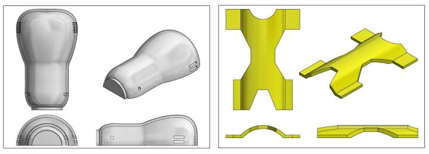

PROTOTIPO 1
El prototipo uno se diseñado con la forma de una pera para la parte inferior con la intensión de asemejar la forma del brazo.La parte superior tiene espacio en los lados los cuales permitirá la ventilación del muñón. Estos se conectaran mediante correa la cual permitirá un mejor ajuste.
A) DISEÑO

Parte Superior Parte Inferior
B) DISPOSITIVO
En las siguientes imagenes se mostrara el diseño del primer prototipo, impreso en 3D usando el material PLA.

Evaluación de funcionalidad
A continuación, se explicarán los defectos del prototipo impreso enumarados anteriormente en la imagen anterior:
1. El radio de curvatura de 2 cm en la tapa es muy pequeño y genera incomodidad al flexionar el brazo.
2. El ancho y largo de esta unión son muy pequeños.
3. Esta parte del socket no es capaz de doblarse en la unión, cuando debería poder hacerlo.
4. Los soportes de la tapa no encajan en la base y no hay forma de poder unirlos.
5. La base tiene un radio de curvatura transversal mayor al radio del muñón.
6. La base es cerrada y en la prueba de funcionalidad no permite enderezar el brazo y genera dolor en la parte del codo.
Concluimos entonces que este diseño no es funcional; por lo tanto, se procederá a realizar un nuevo diseño tomando en cuenta las anteriores observaciones.
*En el siguiente video se puede apreciar una mejor explicación de los detalles del prototipo número 1.